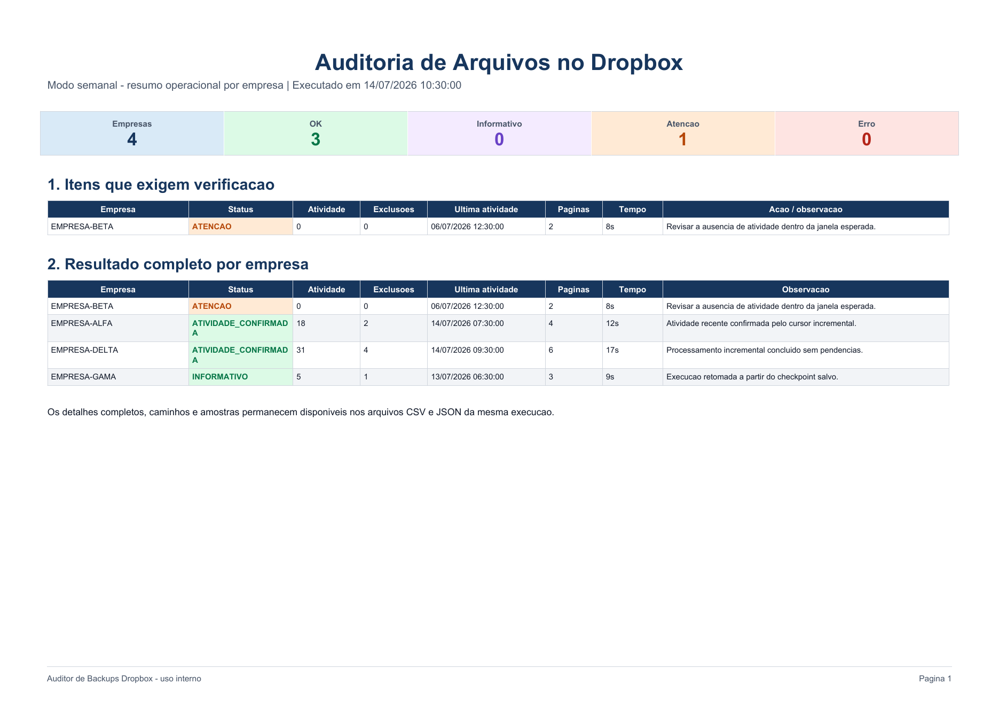
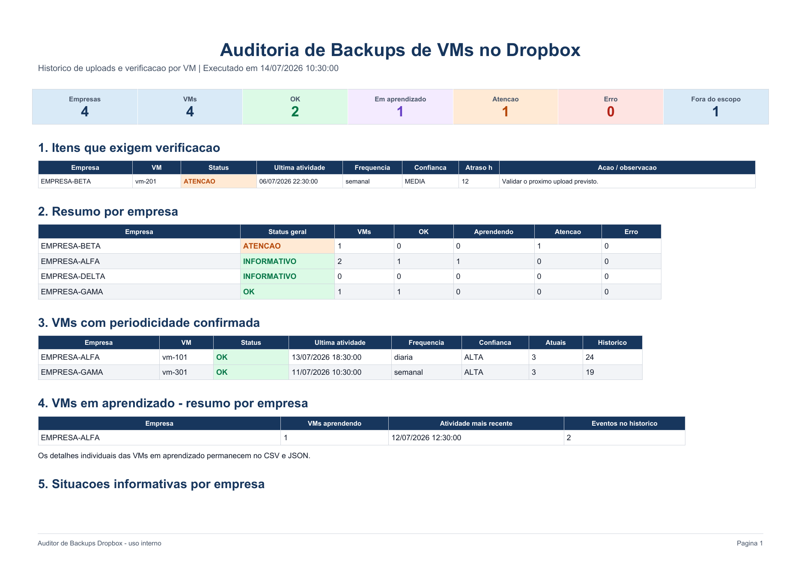
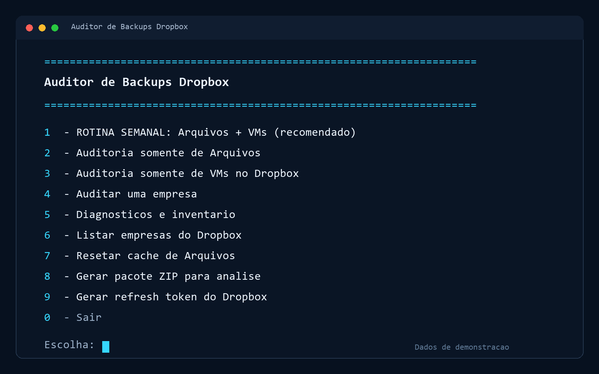

Menos conferência manual, mais evidência revisável
A aplicação organiza a conferência de backups de arquivos e VMs em uma rotina multiempresa. Cursores, checkpoints e histórico evitam reprocessamento desnecessário; políticas por empresa e por VM orientam a classificação dos resultados.
O sistema audita backups que já estão armazenados no Dropbox. Ele não executa o backup das VMs no Proxmox.
Incluídas na rotina de verificação documentada no currículo.
Tempo atual para uma conferência que antes exigia quase cinco horas.
Uma rotina extensa e difícil de revisar
A verificação manual exigia navegar por estruturas de múltiplas empresas, conferir atividade de arquivos, revisar backups de VMs e consolidar pendências. O custo de repetição dificultava priorização e documentação.
- Estruturas e periodicidades diferentes entre empresas.
- Necessidade de distinguir ausência de atividade, atraso, erro e informação.
- Risco de repetir consultas longas ou perder o ponto de retomada.
- Saídas separadas para resumo executivo e investigação detalhada.
Auditoria incremental com estado persistido
- Integração direta com Dropbox para listar e classificar os arquivos armazenados.
- Cursores e checkpoints para retomada de execuções longas.
- Histórico por VM, periodicidade, retenção e regras específicas por empresa.
- Controle de chunks do rclone e validação de atividade de arquivos.
- Relatórios consolidados e detalhados em PDF, CSV e JSON.
Uma revisão orientada a prioridades
O relatório consolidado resume empresas em situação OK, informativa, de atenção ou erro. Relatórios específicos de arquivos e VMs preservam o contexto necessário para investigação.
Visão consolidada para identificar as prioridades da semana.
CSV e relatórios detalhados para filtrar empresa, arquivo ou VM.
Checkpoints e cursores reduzem o custo de retomadas.
As evidências públicas usam apenas nomes e dados de demonstração.
Relatório completo, sem corte lateral
As evidências preservam a página inteira do relatório e podem ser abertas em resolução completa para conferência dos indicadores e detalhes.







Projetado para execução repetida
- Usar estado incremental para reduzir consultas e permitir retomadas.
- Separar regras de arquivos e VMs para preservar o contexto de cada auditoria.
- Manter políticas configuráveis por empresa e por periodicidade.
- Gerar resumo consolidado sem retirar os dados detalhados de investigação.
- Sanitizar todas as evidências públicas e excluir credenciais do repositório.
Fronteiras atuais
- A integração direta atual é com Dropbox.
- As regras dependem da configuração correta de empresas, VMs e periodicidades.
- A automação não substitui testes de restauração nem executa o backup das VMs.
- Credenciais e ambientes reais permanecem fora do repositório público.
Código, exemplos seguros e documentação de execução estão no repositório público.
Abrir no GitHub